Lesson content · 课文
Lesson 32: What's he/she/it doing? · 他／她／它正在做什么？
Listen and answer the questions. 听录音并回答问题。
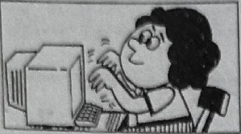
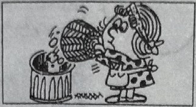
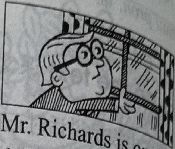
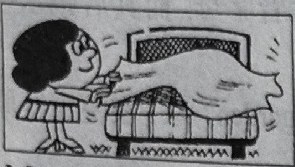
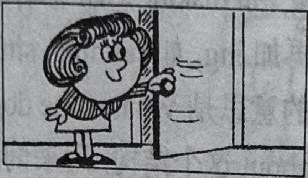
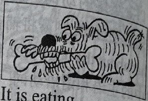
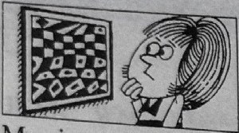
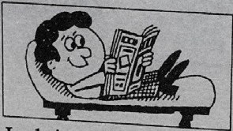
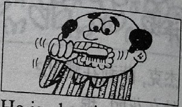
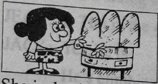
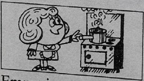
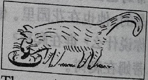
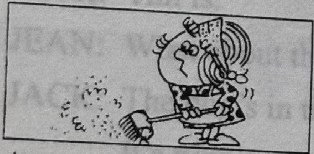
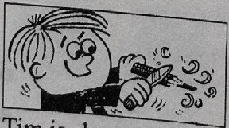
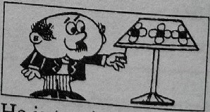
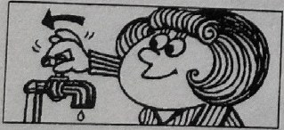
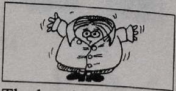
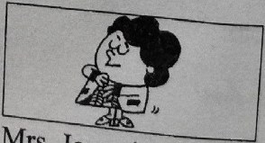
New words and expressions · 生词和短语
| Word · 单词 | Pronunciation · 音标 | Meaning · 词义 |
|---|---|---|
| type | /taɪp/ | v. 打字 |
| letter | /ˈletə/ | n. 信 |
| basket | /ˈbɑːskɪt/ | n. 篮子 |
| eat | /iːt/ | v. 吃 |
| bone | /bəʊn/ | n. 骨头 |
| clean | /kliːn/ | v. 清洗 |
| tooth | /tuːθ/ | n. 牙齿（复数 teeth /tiːθ/） |
| cook | /kʊk/ | v. 做（饭菜） |
| milk | /mɪlk/ | n. 牛奶 |
| meal | /miːl/ | n. 饭，一顿饭 |
| drink | /drɪŋk/ | v. 喝 |
| tap | /tæp/ | n. （水）龙头 |
Practice · 课文练习
Written exercises · 书面练习
A. Complete these sentences · 现在进行时
Complete these sentences. 模仿例句把祈使句改写成现在进行时。
Example · 例句
Sweep the floor! → She is sweeping it.
-
textbook: A. Complete these sentences · 现在进行时 — Open the window! He ____.
-
textbook: A. Complete these sentences · 现在进行时 — Sharpen this pencil! She ____.
-
textbook: A. Complete these sentences · 现在进行时 — Dust the cupboard! She ____.
-
textbook: A. Complete these sentences · 现在进行时 — Empty the basket! She ____.
-
textbook: A. Complete these sentences · 现在进行时 — Look at the picture! He ____.
B. Questions and answers · 提问并回答
Write questions and answers. 模仿例句提问并回答。
Example · 例句
Nicola / emptying the basket / typing a letter
What is Nicola doing?
Is she emptying the basket?
No, she isn’t emptying the basket.
She’s typing a letter.
-
textbook: B. Questions and answers · 提问并回答 — Mr. Richards / cleaning his teeth / opening the window
-
textbook: B. Questions and answers · 提问并回答 — My mother / shutting the door / making the bed
-
textbook: B. Questions and answers · 提问并回答 — The dog / drinking its milk / eating a bone
-
textbook: B. Questions and answers · 提问并回答 — My sister / reading a magazine / looking at a picture
-
textbook: B. Questions and answers · 提问并回答 — Emma / dusting the dressing table / cooking a meal
-
textbook: B. Questions and answers · 提问并回答 — Amy / making the bed / sweeping the floor
-
textbook: B. Questions and answers · 提问并回答 — Tim / reading a magazine / sharpening a pencil
-
textbook: B. Questions and answers · 提问并回答 — The girl / turning on the light / turning off the tap
-
textbook: B. Questions and answers · 提问并回答 — The boy / cleaning his teeth / putting on his shirt
-
textbook: B. Questions and answers · 提问并回答 — Miss Jones / putting on her coat / taking off her coat
Practice worksheet · 配套练习
A. Question words and verbs
Write four-line dialogues using the prompts. 模仿例句写出以下对话。
Example · 例句
A: Who’s typing the letters?
B: Nicola is.
A: And what’s Tim doing? Is he typing letters?
B: No, he isn’t. He’s sharpening some pencils.
-
worksheet: A. Question words and verbs — Who / eat bones? — The dog.
And what / cat do? bones? — It / drink its milk. -
worksheet: A. Question words and verbs — Who / sweep the floor? — Amy.
And what / Anna do? floor? — She / make her bed. -
worksheet: A. Question words and verbs — Who / read a book? — Sally.
And what / Jack do? book? — He / open some windows.
B. Situations
What do you say? 根据以下情景写出你应该说的话。
-
worksheet: B. Situations — Someone says something that surprises you or that you don’t hear very well.
-
worksheet: B. Situations — Someone says Jill is reading a book in the kitchen. You want to know about John.
Grammar practice · 语法练习
I. Ask and answer questions according to the example
Ann/read-> Is Ann reading? Yes, she is.Sam/climb a treeKathy/cookMiss Scott/runPedro/make his bedMarie/clean the roomshe/drink teahe/clean his teethshe/type a letteryour mother/sweep the floor
II. Make dialogues using the cues
Set 1 example: the girl/run/walk/to school
Is the girl running? No, she isn't. What is she doing? She's walking. Where is she walking? She's walking to school.
- 1a.
the girl/run/walk/to school - 1b.
Sam/sit on a chair/stand/near the door - 1c.
Jane/sit in the garden/cook/in the kitchen - 1d.
the dog/drink/eat a bone/under a tree - 1e.
Tony/sweep the floor/empty a basket/in the garden - 1f.
the cat/drink its milk/run/across the lawn
Set 2 example: read a magazine/my father/your mother/clean her teeth
Who is reading a magazine? My father is. What about your mother? She is cleaning her teeth.
- 2a.
read a magazine/my father/your mother/clean her teeth - 2b.
turn on the light/Kathy/Mike/look at a picture - 2c.
run across the lawn/the cat/the dog/run after the cat - 2d.
listen to the stereo/Sally/Ann/put on her skirt - 2e.
eat a bone/the dog/the cat/drink its milk - 2f.
climb the tree in the garden/Jack/Jane/sit under the tree
Your notes and answers
Use this space for longer responses or exercises that do not have an individual answer box.